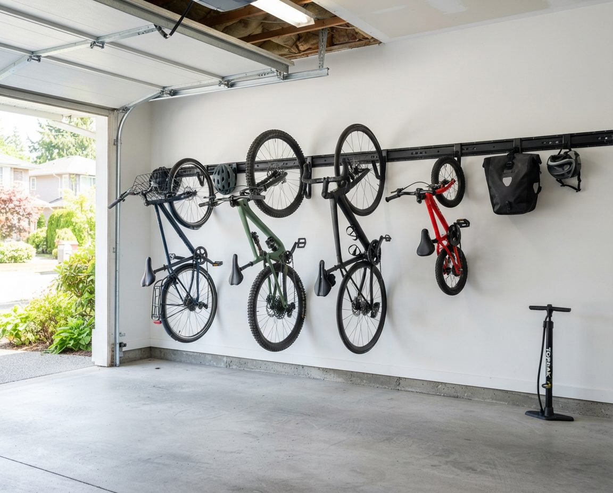
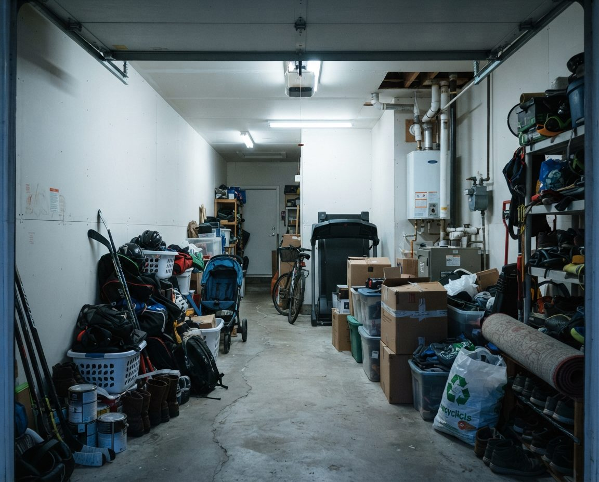
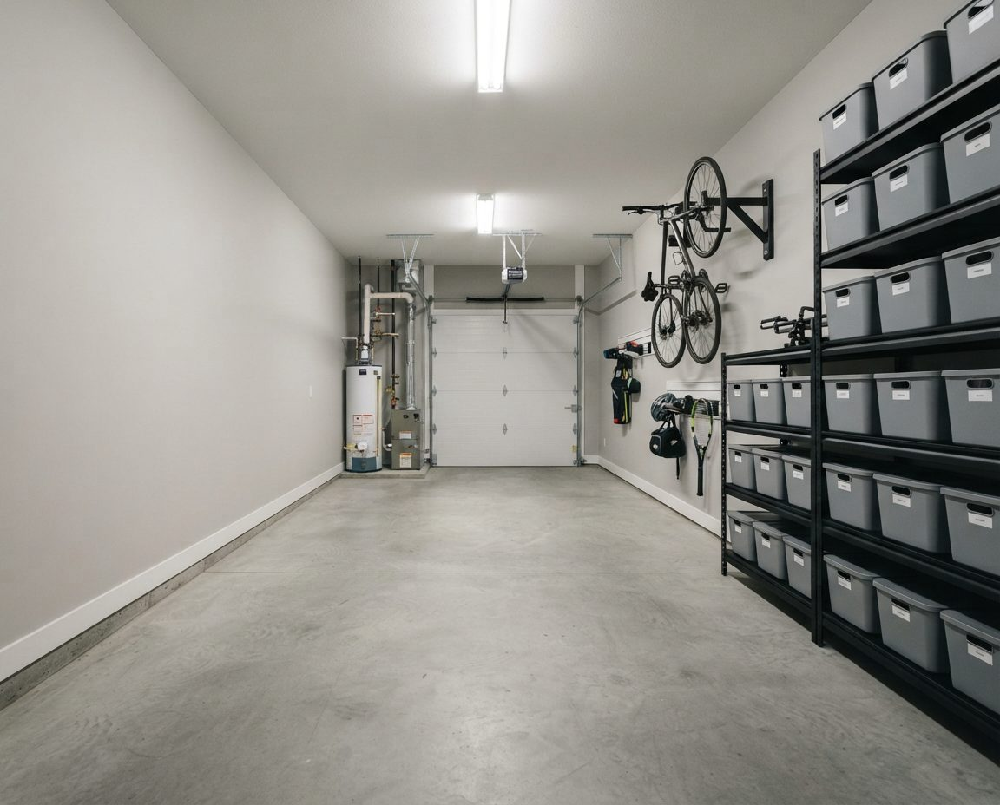
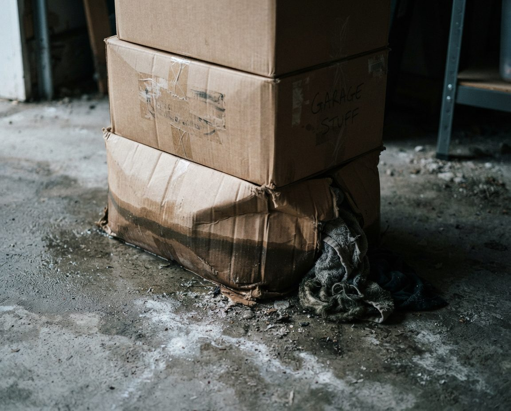
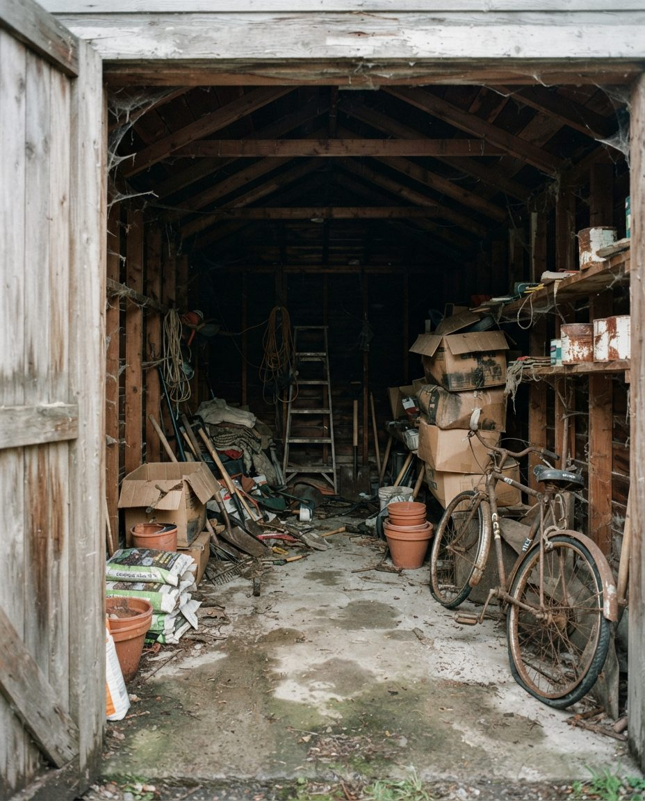
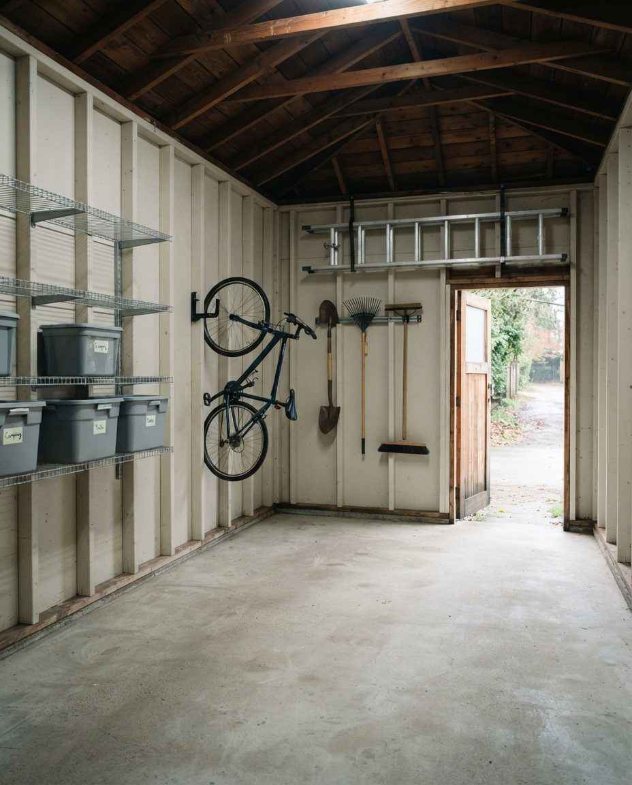
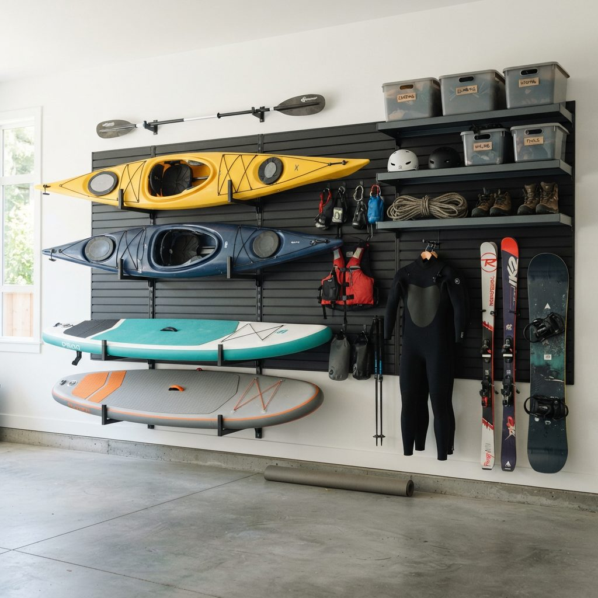

Wall rails, hooks, ceiling lifts and floor stands planned for the bikes your household actually rides: road and commuter bikes, North Shore mountain bikes, kids' bikes, cargo bikes and heavy e-bikes. We also set up a safe e-bike charging spot, keep wet bikes off damp walls and cardboard, and make the garage harder to steal from. Lane garages, townhouse tandems and attached doubles across Vancouver, Burnaby, the North Shore and the rest of Metro Vancouver.

The City of Vancouver's 2025 Transportation Survey, run from September to December 2025, puts the numbers on what most of our clients already know. 61% of households in the city own at least one adult bike, the average household owns 1.31, and the city holds an estimated 432,100 adult bikes. About 46,900 of those are e-bikes, up from roughly 40,800 the year before, and e-bikes now carry 22.5% of weekday bike trips.
Those averages hide the garages we get called to. A family of four in Kitsilano or Lynn Valley can easily own eight bikes: two commuters, a mountain bike, a road bike, kids' bikes in two sizes with the outgrown pair still waiting to be passed on, and a trailer or tag-along. Add an e-bike with a separate battery and charger and the floor is gone. Bikes are the item most likely to stop a car from parking in a Metro Vancouver garage, because they are wide, awkward and leaned against whatever is closest.
So we start every job with a count. Every bike gets a line on the plan with its type, its rough weight, who rides it and how often. A bike ridden to work every day goes at floor level by the door. A road bike used on summer weekends can go higher. A child's bike that will be outgrown by next spring gets a hook, not a custom rack.
There is no single best bike rack. The right hardware depends on the bike's weight, how often it moves, and how much wall depth the garage can spare.
The cheapest and most space-efficient option for lighter bikes. The bike hangs by its front wheel, so it sticks out from the wall by roughly the diameter of a wheel plus the pedals. Space hooks so handlebars interlock at alternating heights, and fit a rubber-capped hook or a tire tray at the bottom so the rear wheel does not mark the drywall. Vertical hooks suit kids' bikes, road bikes and most hardtail mountain bikes. They suit anyone who can lift the bike to shoulder height.
A horizontal track screwed into the studs, with hooks that slide sideways along it. This is what we fit most often, because the household's bikes change every few years and the rail does not. The same rail takes helmet hooks, a pannier hook and a hose hanger, so all the riding kit lives in one strip of wall. Swivel hooks that let the hung bike fold flat against the wall are worth paying for in a narrow single garage where every few centimetres of depth matter.
A pulley hoist parks a bike flat against the ceiling above the car hood or a storage zone. It is good for bikes that move a few times a season and poor for anything ridden daily, since raising and lowering takes a minute each way. We check ceiling height, the garage door track and the door opener before we suggest one, because a hoist that sits in the path of a rising door is useless.
For bikes that are too heavy to lift or are ridden every day: e-bikes, cargo bikes, and bikes with child seats fitted. A floor stand or wall-mounted wheel chock holds the bike upright in a marked bay so it stops leaning on the car. We place the bay so the bike can roll straight out the door without anything being moved first.


Bikes off the floor, full length backAn example Metro Vancouver tandem layout. Bikes go on the wall at the far end, where they are reached by walking past the car, and the shelving keeps to one side so both cars or a car and a bike bay still fit.
E-bikes change the plan in two ways. They are heavy, often well over 20 kilograms, so most people cannot safely lift one onto a vertical hook every evening. And they carry a lithium-ion battery that needs charging somewhere.
The battery deserves real attention in this city. Vancouver Fire Rescue Services reported five deaths in Vancouver in 2022 from fires involving rechargeable batteries, including lithium-ion, and officials told CTV News that year that lithium-ion batteries had become the leading cause of fire deaths in the city. A garage full of paint, fuel, cardboard and a car is a poor place for a battery fire.
The safety sheet the District of West Vancouver shares from the National Fire Protection Association gives clear rules that translate directly into a garage layout. Store e-bikes and batteries away from exit doors and away from anything that can get hot or catch fire. Use only the battery and charger that came with the bike. Do not charge below 0°C or above 40°C. Stop using a battery that smells, swells, leaks, changes colour or gets unusually hot, and take damaged batteries to a recycling depot rather than the bin.
The bike bay goes on a wall away from the door into the house, so a battery problem never sits between you and the way out. The shelf for the charger is metal, not particleboard, with nothing combustible above or beside it: no gas cans, paint, aerosols, cardboard or the recycling bins. The charger plugs straight into a wall outlet with no power bar, and the cord runs up the wall, clear of the floor where the car drips rainwater and tires can roll over it. In a Tri-City News report on e-bike fires, a North Vancouver Fire assistant chief advised unplugging once the battery is full, and an e-bike seller advised staying nearby while it charges instead of leaving it overnight.
Winter matters here as well. An attached garage usually stays warmer than outside, but an uninsulated lane garage on a cold January night can drop close to freezing. If your garage drops near zero, bring the removable battery inside to charge and clip it back on in the morning. We leave a labelled shelf by the house door for exactly that. If you are also planning a car charger, our page on EV charger garage organization covers how to keep the car's charging wall and the bike bay from competing for the same space.
A bike ridden through a Vancouver winter comes home wet most days from November to March. Hung straight onto a hook against a cold concrete foundation wall, it drips onto the slab, the chain and bolts rust, and the wall behind it stays damp. Cardboard boxes stacked under the bikes soak up the drips and go soft and mouldy within a season.

Our layouts deal with the water first. Bikes hang on rails mounted to framed, drywalled walls where possible, not bare concrete. Each daily bike gets a drip zone underneath it: bare slab or a rubber mat, never boxes. Rain gear, gloves and shoe covers get hooks next to the bike, where they can dry, instead of being balled up in a bin. A wall-mounted chain lube and rag kit at the bay makes wiping the chain after a wet ride a thirty-second job. In older garages with persistent damp, we pair the bike bay with a dehumidifier on a shelf and a drain hose run to the floor drain if there is one. Our guide to mould in Vancouver garages explains why damp slabs and walls ruin stored things, and what fixes it.
Bike theft in Vancouver has fallen a long way. Global News reported in February 2024 that the Vancouver Police Department logged more than 4,000 stolen bikes in 2015 and that the number had dropped about 60% by 2022. Police have credited part of that drop to Project 529, a free online registry the VPD helped bring to Vancouver in 2015. Garages are still targets, particularly lane garages that open onto a quiet alley and shared storage rooms in strata buildings.
VPD's advice in that report was to record your serial number, photograph the bike and register it on Project 529. We build the rest into the layout. Bikes hang where they cannot be seen through the garage door windows or from the lane when the door is up. Expensive bikes get a ground anchor or a locking wall mount bolted into the slab or studs, so a thief who gets in still has to cut a hardened lock. Bike tools, the pump and spare locks live in a closed cabinet, not on an open pegboard by the door. And the lane door gets a clear path, so you can see inside the moment it opens.
The single detached garage at the back of a 33-foot lot in East Vancouver, Grandview or Kitsilano is often the oldest building on the property, with an earth-stained slab, open framing and a side door to the lane. Bikes end up leaning in the dark corner behind the lawnmower. These garages are narrow, so we use the open stud bays: hooks screwed into the framing between studs, shelves sitting inside the bays, and long items like ladders hung above the door header.


One clear wall for the bikeAn example lane-garage layout. The bike sits on the wall nearest the lane door so it rolls straight out, and nothing is stored in front of it. Our laneway garage clearing page covers the cleanout that usually comes first.
Tandem garages, one car behind the other, are standard in townhouse developments across Burnaby, Richmond and Coquitlam. Bikes belong at the far end of a tandem, on the back wall or the last stretch of side wall, because that is the only spot that does not block a car door. Check your strata bylaws before drilling, since some restrict what can be mounted on common-property walls, and ask council whether any rules apply to charging e-bike batteries in unit garages. Our Burnaby garage organization page goes deeper on strata tandems.
In a double or triple garage in Surrey, Coquitlam or on the North Shore we can give bikes a full wall: a rail at shoulder height for the light bikes, a floor bay for the e-bike with its charging shelf, and a tool and parts cabinet at the end. Kids' bikes go on lower hooks so the kids can reach them and put them away without help.
Bikes rarely travel alone in this region. Households that ride the North Shore trails in summer usually also ski or board at Cypress, Grouse or Seymour in winter, and paddle at Deep Cove, Jericho or False Creek in between. A bike wall that ignores the rest of the gear just pushes the skis and the paddleboard onto the floor in front of it.

We plan a seasonal gear wall next to the bikes on slatwall or a second rail. Kayaks and paddleboards rest flat on padded cradle arms. Skis and snowboards hang in pairs. Wetsuits and drysuits get wide hangers where they can drip-dry, never folded into a bin damp. The season you are in sits at reachable height, and the off-season gear moves up a level in spring and autumn. We build the same kind of gear wall for mountain households in Canmore, where the climate is dry and the problem is space; here the problem is space and rain together.
It starts with a free on-site assessment. We count and weigh the bikes, measure the walls and ceiling, find the studs, check the garage door track and outlets, and ask who rides what and when. You get a written plan and a fixed price before anything is bought.
On install day we clear the wall, clean the floor below it, mount the rails, hooks, lifts or stands into framing, hang every bike, set up the e-bike bay, and label the shelves. Most bike-focused jobs in a single or tandem garage take one day. If the bikes are only part of the problem, we combine the job with a full garage organization in Vancouver, and our garage storage solutions page compares the shelving and overhead racking that sit alongside a bike wall.
Service pricing below. Racks, rails, hooks, lifts and shelving are quoted separately at cost and specified to a budget you set.
We work across Metro Vancouver. In Vancouver the job is often a narrow lane garage behind an older house, with bikes that need to roll straight out to the alley. On the North Shore it is mountain bikes, skis and paddleboards competing for one wall, and our North Vancouver garage cleaning page covers the moss and damp that come with hillside lots. In Burnaby, Richmond and Coquitlam it is mostly townhouse tandems under strata rules, and in Surrey and New Westminster we fit full bike walls in attached doubles. Start from the GarageScape home page to see everything we do.
Get them off the floor. Lighter bikes go on a wall rail or vertical hooks with handlebars staggered at alternating heights, and swivel hooks let a hung bike fold flat to the wall in a narrow single garage. Bikes ridden every day stay at floor level near the door. Heavy e-bikes and cargo bikes get a floor stand in a marked bay.
Often not safely. E-bikes are frequently well over 20 kg, and lifting one onto a vertical hook every evening is how hooks pull out of drywall and backs get hurt. We put e-bikes in a floor bay with a wheel chock or a low wall mount bolted into framing, and remove the battery first if you ever do lift one.
It can be, with the right setup. Use only the charger that came with the bike, plug it straight into a wall outlet, keep it on a metal shelf away from the door into the house and away from fuel, paint and cardboard, and stay nearby while it charges. The NFPA advises against charging below 0°C or above 40°C, so bring the battery inside in a cold lane garage.
Hang them on a framed wall rather than bare concrete, leave a drip zone of bare slab or a rubber mat under each daily bike, wipe and lube the chain after wet rides, and run a dehumidifier in garages that stay damp through winter. Keep cardboard away from the bike wall entirely.
Register each bike free on Project 529 and record its serial number and photos, as the Vancouver Police Department advises. Then hang bikes out of sight from the lane and the door windows, bolt a ground anchor or locking wall mount into the slab or studs for expensive bikes, and keep tools in a closed cabinet.
Check your strata bylaws before drilling. Some bylaws restrict what can be mounted on walls that are common property, and some councils set rules on charging e-bike batteries in unit garages. We can plan a layout using freestanding stands and shelving if wall mounting is not allowed.
Design and installation starts at $549 for a single or tandem garage, $899 for a standard double, and $1,800 for a full transformation that bundles decluttering, a deep clean and the organization build. Racks, rails, hooks and lifts are quoted separately at cost.
Free on-site assessment. Every bike counted, a rail and bay plan for each one, then a written plan and fixed price before we start.
Serving Vancouver, Burnaby, Richmond, Surrey, Coquitlam, New Westminster, North Vancouver and West Vancouver.